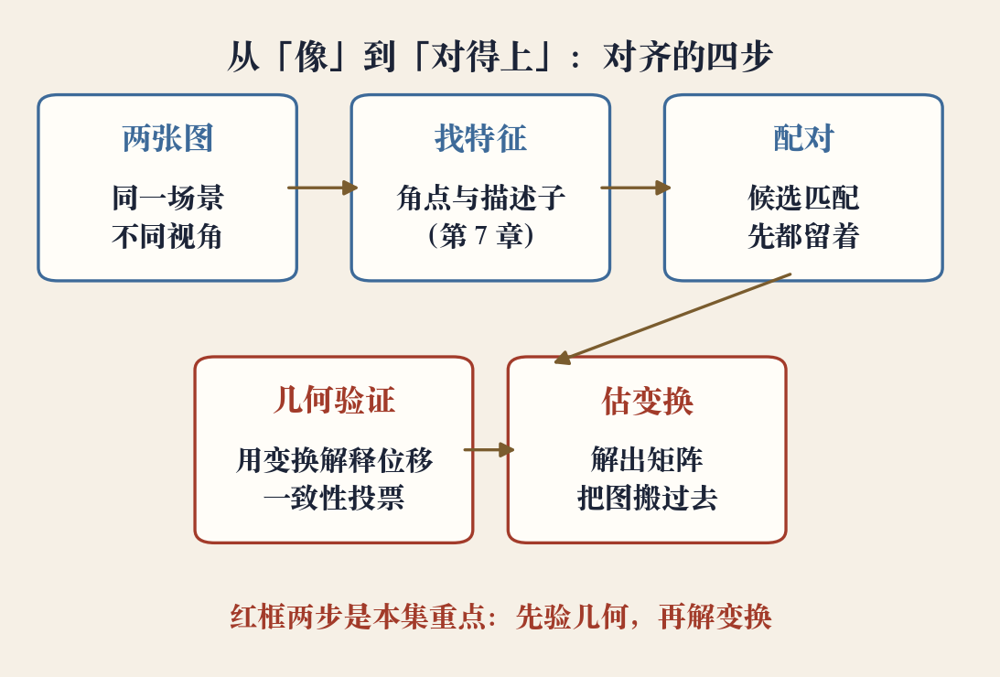
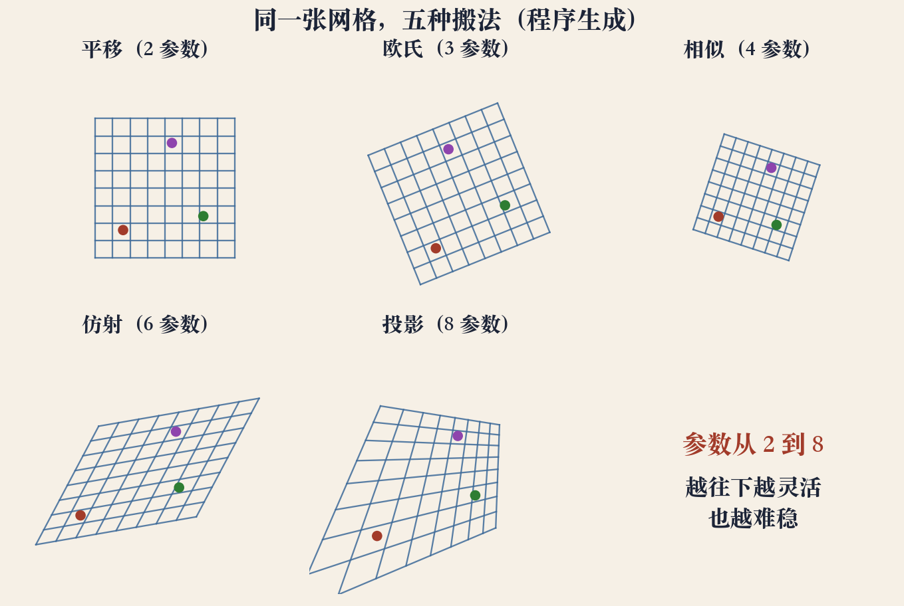

第 8 章开场 · 原书第 501 页
把两张图搬进同一个坐标系
对齐：求两张图之间的坐标对应关系。
全景拼接、文档扫描、增强现实都从这一步开始。
先对齐坐标，再谈融合和接缝。
本集讲定义和五种平面变换。
依据：原书第 501–503 页
本集问题
两张照片怎么放进同一坐标系
对齐为什么是第一步
五种平面变换怎么排
正课第六十六集
01 / 16
全章四节 · 本集只讲开头
第 8 章的四块内容
第 503 页起：两两对齐。
第 514 页起：图像拼接。
第 526 页起：全局对齐；第 536 页起：合成。
最小二乘、RANSAC、捆扎都从这里展开。
依据：原书第 503–536 页
四块顺序
两两对齐（第 503 页）
图像拼接（第 514 页）
全局对齐（第 526 页）
合成（第 536 页）
正课第六十六集
02 / 16
匹配之后 · 原书第 503 页
匹配完，还要验证几何
特征提取后，先把不同图的特征匹配起来。
匹配只是候选，几何验证才算数。
一个变换解释不了的位移，就是外点。
验证做不好，后面都在错数据上优化。
依据：原书第 503 页

对齐四步：两张图→找特征→配对→几何验证→估变换｜程序生成，未用教材或论文原图
正课第六十六集
03 / 16
配准的定义 · 原书第 503 页
配准：求一个点对点的变换
几何图像配准，求变换把点映到对应点。
变换可以是二维，也可以是三维。
本集只做二维：全景和文档扫描的主场。
输出是一个变换矩阵，像素据此找位置。
依据：原书第 503 页
变换能描述什么
平移
旋转、缩放
剪切、透视
正课第六十六集
04 / 16
三个近亲 · 边界要清
配准、位姿、运动恢复结构
配准问：怎么把点搬过去。
位姿问：相机相对已知物体在哪、朝哪看。
运动恢复结构：同时估三维几何和相机运动。
本集只做配准，只做全局参数变换。
依据：原书第 503 页
三者问什么
配准：点怎么搬
位姿：相机在哪
运动恢复结构：几何和运动
正课第六十六集
05 / 16
Figure 8.2 · 原书第 503 页
五种平面变换排成一级一级
平移、欧氏、相似、仿射、投影。
共同假设：整张图共用一个变换。
参数从 2 个加到 8 个。
参数越多，能描述的运动越多，也越难估稳。
依据：原书第 503 页 Figure 8.2

同一张网格的五种搬法：平移/欧氏/相似/仿射/投影，参数从 2 到 8｜程序生成，未用教材或论文原图
正课第六十六集
06 / 16
前两级 · 参数 2 和 3
平移与欧氏：长度角度都不变
平移两个参数：横移、竖移。
欧氏再加一个旋转，三个参数。
两级都保持长度和角度，只许平移和旋转。
实验：平移和欧氏的最大距离误差 2.22e-16。
依据：原书第 503 页；本集实验
参数与不变量
平移：2 个参数
欧氏：3 个参数
不变量：长度、角度
正课第六十六集
07 / 16
第三级 · 参数 4
相似：形状不变，大小可变
旋转、平移，再加一个统一缩放，共四个参数。
长度按同一比例变，角度不变。
横竖比例一样，圆还是圆。
实验：缩放比例 0.7200，波动 2.22e-16。
依据：原书第 503 页；本集实验
相似变换
4 个参数
统一缩放：横竖同比例
不变量：形状、角度
正课第六十六集
08 / 16
第四级 · 参数 6
仿射：平行还在，角度可变
六个参数，横竖可以不同比例拉伸。
也允许剪切，正方形变平行四边形。
平行线仍然平行，长度和角度都可能变。
实验：平行度 0.00e+00，角度改变 3.20°。
依据：原书第 503 页；本集实验
仿射变换
6 个参数
保留：平行
改变：长度、角度
正课第六十六集
09 / 16
第五级 · 参数 8
投影与单应：平行线可以相交
八个参数，比仿射多一行透视除法。
平行线可以交于消失点，直线仍是直线。
交比不变；至少四对不共线的点。
实验：交比 1.2381→1.2381，平行度 0.0767。
依据：原书第 503 页；本集实验
x' = H x
x' 与 H x 相差一个尺度；H 为 3×3，8 个自由度，含透视除法
正课第六十六集
10 / 16
不变量表 · 程序生成
越自由，能守住的不变量越少
五级是嵌套的：平移、欧氏、相似、仿射、投影。
每升一级，多放开一种运动。
也多丢掉一个不变量。
选模型，就是选你愿意假设什么不变。
依据：原书第 503 页；本集实验
五种变换的不变量对照：长度/角度/平行/交比/参数｜程序生成，未用教材或论文原图
正课第六十六集
11 / 16
工程判断 · 不要一上来就八参数
先看场景，再定模型
绕光心纯旋转：两图之间是单应。
面对平面：单应同样适用。
远距离、深度变化小：相似或仿射更稳。
只是手持平移：平移模型就够。
依据：原书第 503 页
看残差再升级
先选能解释数据的最小模型
残差够小，不加参数
残差系统性变大，再升级
正课第六十六集
12 / 16
怎么解 · 原书第 504 页起
最小二乘加一致集
最小二乘：最小化位置误差的平方和。
它假设匹配基本正确。
有外点，就先用 RANSAC 挑出一致集。
再在一致集上精解，顺序不能反。
依据：原书第 504 页
两条路线
RANSAC：先保命
最小二乘：再求精
顺序不能反
正课第六十六集
13 / 16
边界 · 非刚性、视差
一个矩阵解释不了所有像素
非刚性形变，单个矩阵不够。
明显视差：近处动得多，远处动得少。
办法：分块、换更复杂的模型、先全局再局部。
这不是算法失败，是模型不够。
依据：原书第 503 页
全局层的边界
非刚性形变
大视差
先全局对齐，再局部修正
正课第六十六集
14 / 16
回头看 · 五种搬法
五种画面感，五种假设
平移只挪位置，欧氏转个身。
相似整体缩放，仿射压成平行四边形。
投影一头大一头小。
看到平行线汇聚，就该想到投影。
依据：本集实验；原书第 503 页
看到什么，想到什么
只挪位置：平移
圆变椭圆：至少仿射
平行线汇聚：投影
正课第六十六集
15 / 16
收束 · 下一集换路
梯子带走，下一集用像素
对齐：从匹配到几何验证。
五种平面变换与它们的参数、不变量。
选型和求解路线：最小模型加残差检验。
下一集：不找匹配点，直接用像素梯度估位移。
依据：原书第 503–504 页
本集带走
对齐的定义与验证
五种变换的梯子
选型与求解路线
正课第六十六集
16 / 16